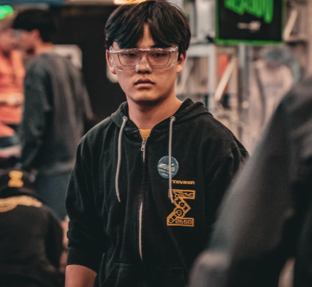
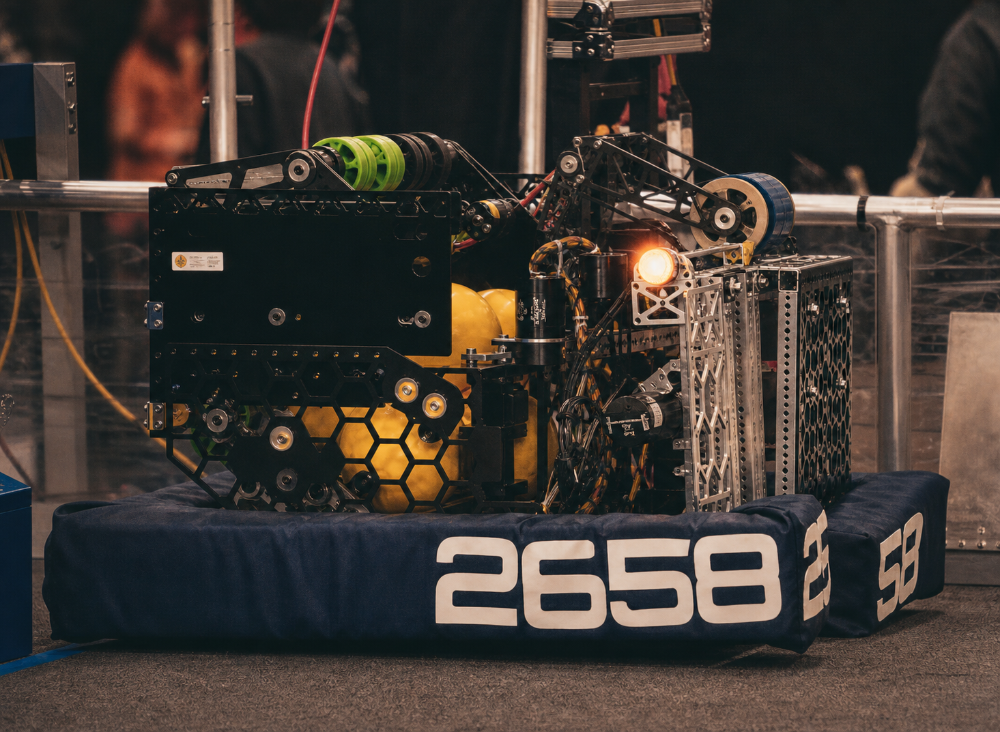
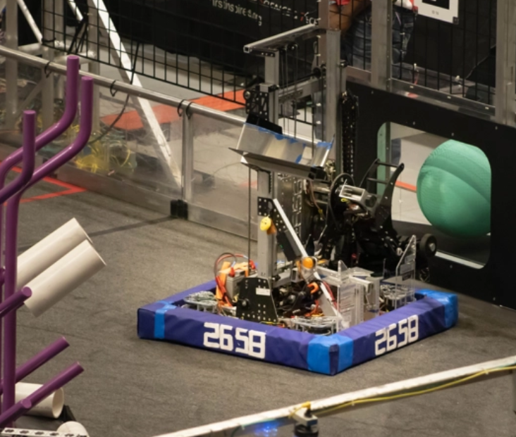
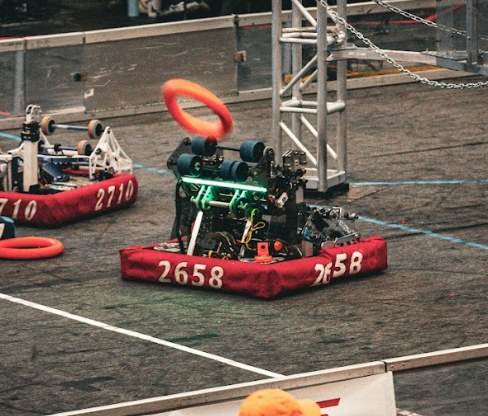
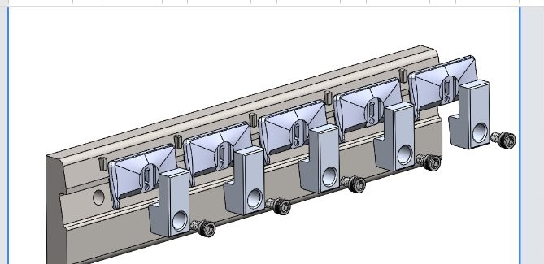
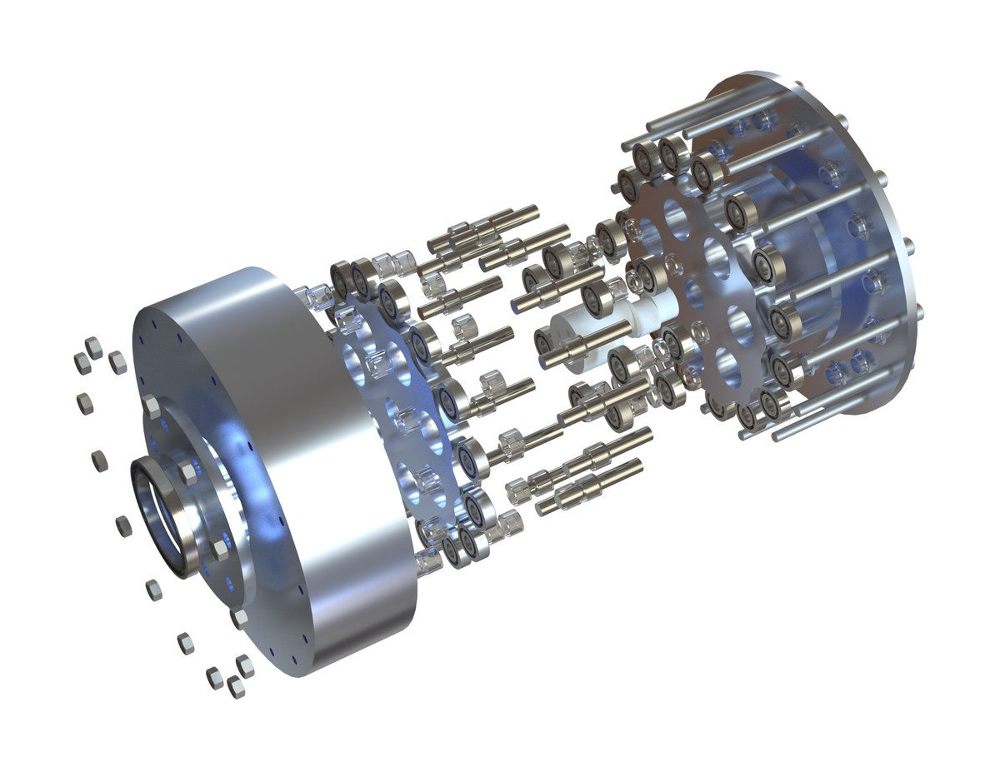
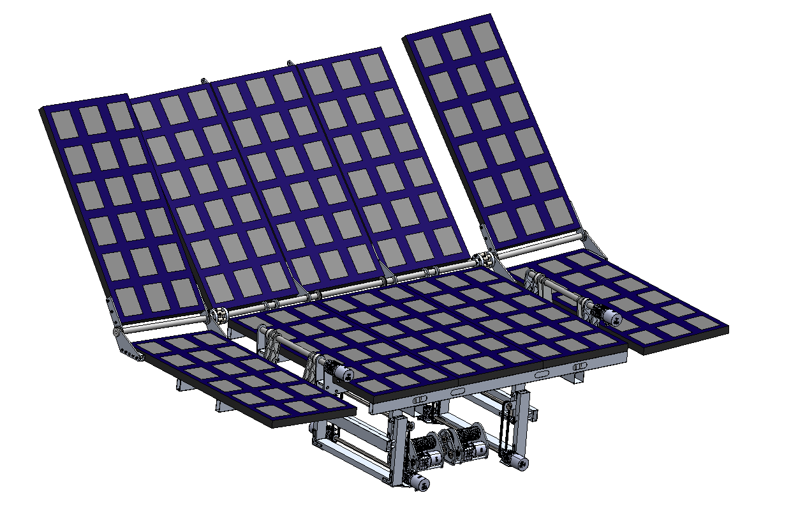
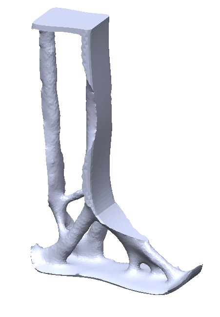
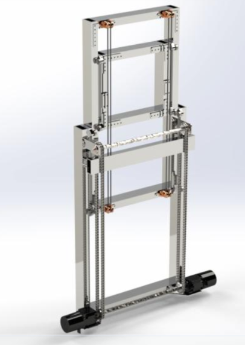
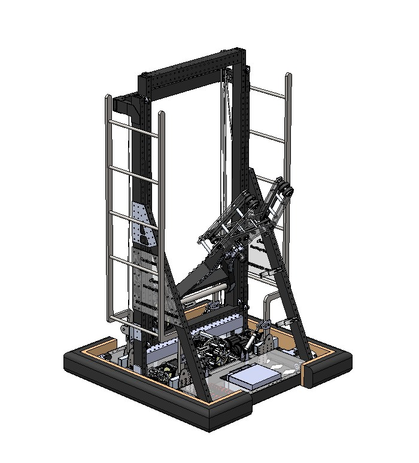

SIMEON
KIM.
I design and build complex mechanical systems under real pressure — 2000-part competition robots in 6 weeks, precision CNC production, prosthetic devices for real patients.

President & Design Lead
Led design, prototyping, and full assembly of multiple 2000+ part robots within 6-week build seasons. Independently developed 3/5 mechanisms in 2024, 4/7 in 2025, and 4/8 in 2026.
0.4%
FRC Dean's List Finalist 2025 — top 0.4% of 90,000+ participants globally.
CNC Manufacturing
4-axis HAAS. Commercial production runs. SolidWorks fixturing. GD&T and reverse engineering at Kinetic CNC.
Robard Bionics
Prosthetics design intern — distal attachments and lower limb aesthetic refinement for real amputee patients.
Tools & Certs
Projects

FRC 2026 Robot
First competition win since 2018 — second in team history. Designed 4/8 mechanisms including our first turreted shooter and second-gen elevator. Led manufacturing and integration, and eliminated recurring electrical failures through intentional system-level design.

FRC 2025 Robot
A step toward more structured design — with honest gaps. Designed the team's first two-stage cascading cable elevator, swerve drivetrain, hopper, and arm. The season that revealed electrical system design as a critical weakness, reshaping the next year's approach.

FRC 2024 Robot
The season fundamentals were built. Geometry-first 4-bar linkage intake that doubled as an indexer. Mid-season failure diagnosis led to a full structural redesign. First use of FEA, topology optimization, and external CNC coordination.
Project Archive

Manufacturing
CNC Intern
4-axis HAAS. Commercial production. SolidWorks fixturing.
Prosthetics
Prosthetics Design
Distal attachments & lower limb refinement. Real patients.

CAD Design
Cycloidal Drive
Custom 14:1 gearbox. FEA-validated. 3D-printable.

CAD · Competition
Solar Tracker
Modeling the Future Semifinalist. Lead-screw mechanism.
Client Commission
Aperture Mechanism
Professional commission for YouTube engineer Jeremy Fielding (1M+ subs).

Independent · Prosthetics
Prosthetics — Topology Opt.
Load-path geometry. FEA validated. Mirrors skeletal anatomy.

CAD · Open Source
FRC Elevators
3 types, variable-driven. Self-taught. Published on GitHub.

FRC · Practice Project
FRC 2018 Robot
16 days. SolidWorks FEA. Dead axle arm, elevator, pneumatics.
Experience
President & Design Lead
Led design, prototyping, and assembly of multiple 2000+ part robots within 6-week build seasons. Independently developed 3/5 mechanisms in 2024, 4/7 in 2025, and 4/8 in 2026. Managed manufacturing and production from 2024 onward. Reduced team expenses 25%; secured SolidWorks and Xometry sponsorships. Primarily a low-resource environment — wood, reused parts, limited tooling — which meant getting faster at diagnosing failures, making tradeoffs under time pressure, and finding workable solutions with what was available.
Prosthetics Design Intern
Designed distal attachments and refined the aesthetic of both a pinky prosthetic and a lower limb prosthetic in SolidWorks. Shadowed client consultations — direct exposure to how engineering decisions affect amputee patients' daily lives.
CNC Manufacturing Intern
Operated 4-axis HAAS CNC machines on live commercial production runs. Machined 500+ parts. Designed SolidWorks fixtures, reverse-engineered proprietary part models, and built a 3D-printed sandblasting fixture eliminating manual masking.
Mechanical Design Consultant
Commissioned by Jeremy Fielding (1M+ subscriber YouTube mechanical engineer) to design a custom aperture mechanism. Delivered professional-grade SolidWorks CAD from brief to final deliverable on a client timeline.
Head Design Mentor
Teaching 9+ students mechanism design, CAD fundamentals, and engineering reasoning. Team remains undefeated and ranked 7th in the region.
Founder
Founded a community problem-solving program that has impacted 1000+ students and faculty. Connects engineering education to real community challenges.
Certifications & Awards
Let's work on
something hard.
Internships, design projects, or just a good engineering conversation — I'm interested.